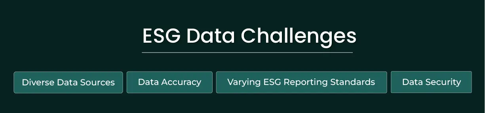

ESG reporting has become a crucial tool for companies and organizations to demonstrate their commitment to sustainable and responsible business practices. As the prevalence of ESG reporting continues to grow, collecting and communicating high-quality ESG data has never been more prominent.
This blog discusses how high-quality data plays a critical role in your organization's ESG initiatives, by providing the foundation for informed decision making, transparency and accountability. The reliability and accuracy of high quality ESG data ensures that your ESG reporting is precise, and your strategies are correctly aligned.
Assuring the quality of ESG data is always challenging because it's complex and evolving. With no single common standard yet to follow, organizations struggle to understand what they need to measure, and often they do not have the means for that. If your ESG data is not of good quality, it cannot be used effectively for any of your ESG goals.

- Set Clear ESG goals : ESG data in our organization is like pieces of a puzzle scattered across different departments. Each department has specific data, such as energy use, employee feedback, and financial records. These pieces are in different formats, making it hard to understand the whole picture of our sustainability efforts. The challenge lies in standardizing this data, so it fits together seamlessly. We need to gather and unify this data to make informed decisions.
- Data accuracy : Ensuring the accuracy of the collected data can be difficult when organizations have to rely on self-reporting or any third-party sources. Verifying the accuracy of reported data is complex because most organizations lack a centralized data core. Consequently, maintaining the quality and reliability of ESG data remains a constant and pressing challenge in the realm of sustainability efforts.
- ESG reporting standards : ESG reporting faces a challenge due to diverse standards. Different sectors and regions follow varying guidelines, making it hard to compare organizations' sustainability efforts. This lack of uniformity complicates assessments for investors and stakeholders. Addressing these differences requires finding common ground and ensuring clarity in ESG reporting practices.
- Data security : Safeguarding the security of ESG data poses a critical challenge for organizations committed to sustainability. As the importance of ESG metrics grows, so does the value of this data, making it an attractive target for cyber threats. Ensuring the confidentiality, integrity, and availability of this sensitive information is essential, yet it's often complex due to the diverse sources and formats of ESG data. Organizations must grapple with the challenge of implementing robust security measures to protect against unauthorized access, data breaches, and cyber-attacks, thereby upholding the trust and credibility of their sustainability initiatives.
We will delve into the depths of ensuring data quality in ESG reporting, exploring key strategies that companies can adopt to guarantee the integrity of their ESG data.
- Understanding the importance of data quality in ESG reporting : High-quality ESG data is the foundation of effective ESG reporting. Ensuring data accuracy, transparency, and consistency is not only a matter of compliance but also a strategic imperative. Companies that prioritize data quality in their ESG reporting demonstrate their commitment to sustainability, gain the trust of stakeholders, and position themselves for long-term success in an increasingly ESG-focused world.
- Conduct internal data audits : Implementing internal and independent audits of ESG data can enhance the reliability and credibility of the reported information. Performing validation checks and quality assessments to identify errors or anomalies in the data (qualitative and quantitative) and addressing the issues promptly may help to ensure data accuracy. Internal audits can help in systematic review and verification of data sources and can help to assess its consistencies through different reporting periods and locations. It can evaluate the processes used to collect ESG data and help to identify where it can be standardised. Internal audits can help in determining which ESG metrics are most useful to the organization.
- Embrace technology : Technological tools can help in tracking and disclosing ESG data. There is a rapidly growing industry of ESG data management and reporting software to help companies capture, record, analyse and report such data across portfolios. ESG software can help companies to gather ESG data in one place and the platforms can act as a centralised repository for companies to manage their ESG-related data and tasks. Effective software can indeed transform raw data into valuable insights and support various aspects of the organizations ESG strategies.
- Establish robust data governance policies/procedures: Robust data governance policies ensure data accuracy and integrity. These procedures establish quality assurance and ensure the security and privacy of ESG data protecting it from any future compromise.
- Third-party audits/verification : Organizations can proactively address the ESG risks by improving the data quality through third party audit and verification. The impartiality of the third-party auditors provides an independent assessment, while enhancing the credibility of the data. The process of rigorous validation promotes accuracy of the data which in turn helps in transparent reporting. The third-party audits help to add value to the organizations' identification of gaps and best practises.
- Culture of transparency and accountability : This includes commitment to identify and address the issues of data quality and demands continuous improvement in data collection and reporting process. This culture promotes open communication within the organization through all layers from leaders to employees reinforcing the importance of data quality and hence demonstrate responsible business practices and sustainable operations.
In conclusion, the importance of ensuring data quality in ESG reporting cannot be overstated. High-quality ESG data serves as the foundation for sustainable and responsible business practices, encouraging informed decision-making, fostering transparency, and reinforcing accountability.